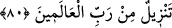
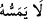

Hazret-i Kur’ân’ın cemâl örtüsünü kaldırdığında
Dârü’l-mülkün anlamını rahatça görür.
Bahru’l-hakàyık’ta şöyle gelmiştir: “Bir kimse gayr ve gayriyyet vehminin
pisliğinden temizlenmeden Kur’ân’ın sırlarını keşfedemez ama halk aynasında Hakk’ı,
Hak aynasında halkı müşâhede etme mertebesine erişir. Bu mânâ da şâhid ve şuhûd,
meşhûdda fenâ olmadıkça müyesser olmaz.
Ezelî olanın sıfatları tecellî edince
Hâdis olanın vasıflarını yakar, mahveder.
Ayet-i kerîmede geçen  kelimesindeki hû zamîri ilâhî hüviyete râcidir. Böyle
olunca ilâhî hüviyetin sırrına ancak varlık makamlarından her hangi bir makama bağlılık
kirleriyle kirli olmaktan tertemiz olanlar dokunur, onların dışındakiler dokunamaz.
Makam kirleriyle kirlenmek, o makam aracılığı ile mutlak Haktan uzaklaşmak demektir.
Temizlenecek kişi için, temizleyici şey olarak gereklidir. O da Allah Teâlâ’dır. Çünkü
kul, kendi kendini temizleyemez, arındıramaz. Onu ancak Allah Teâlâ temizleyip
arındırır. Arınınca da Kur’ân’ın maksad ve muradını anlayabilir.
Bazı büyükler, Kur’ân’ın bikr olduğunu söylemişlerdir. Zâhir âlimlerin Kur’an’dan
anladıkları, yalnız dış görünüş ve lâfzına bağlı olan mânâlardır. Kur’ân’ın esas kapalı
olan düğümlerini çözen âlimler, bâtın ve hakikat âlimleridir. Çünkü Allah “Allah’tan
korkun, Allah size gerekli olanı öğretiyor” (el-Bakara 2/282) buyurmuştur. Bâtın
ulemâsı gerçek takva sahibleridir. Allah onlara âlimlerden hiç birine öğretmediğini
öğretmiştir. Çünkü Kur’ân’ın hayret verici mânâları ve bilgileri bitip tükenmez. Hadis
ilmini de ona kıyas etmek gerekir. Peygamberimiz (s.a.)’in esas murad ve maksadını da
yine hakikat ehlinden başkası gerçek yönüyle anlayamaz. Bu sebeple hadis âlimleri,
hadislerin şerh ve açıklamalarını yapan kişiler, hadisin yalnız i’râbını ve ilk bakışta
anlaşılan zâhirî mânâlarını açıklamakla yetinmişler, içindeki gizli gerçeklere
dokunmamışlardır. Mesela Nevevî, Kirmanî, İbn Hacer ve benzerlerinin şerhleri
nerede, Sadruddin Konevi ve benzerlerinin şerhleri nerede… Aralarında kıyas kabul
etmez farklar vardır. Allah hepsinden razı olsun.
80. O, âlemlerin Rabbinden indirilmiştir.
Bu âyet-i kerîme de Kur’ân’ın diğer bir sıfatıdır. Tenzil kelimesi masdar olup
Kur’ân’a sıfat olmuş ve isminin yerine geçmiştir. Yâni, tenzil kelimesi “indirilmiş”
mânâsınadır. İndirilmiş mânâsına gelen Münezzel (Kur’ân), tenzil adıyla
isimlendirilmiştir. Nitekim bazı dilciler tarafından “güç yetirilmiş” anlamındaki makdur